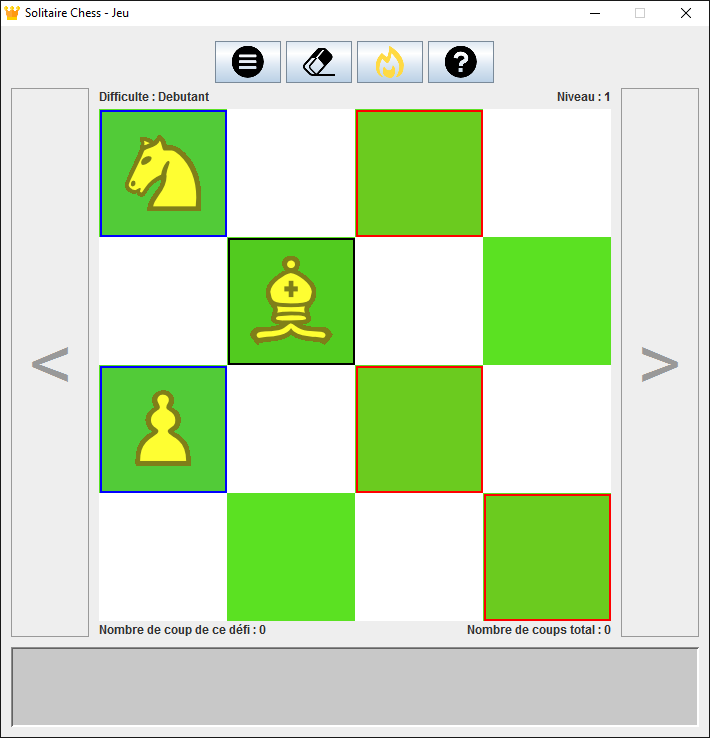
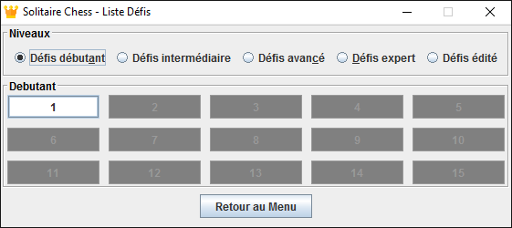

(Si vous vouliez consulter le manuel d'utilisation de votre exemplaire du Solitaire Chess, c'est ici)
Le Solitaire Chess est un jeu de logique en solitaire.
Il ne s'agit pas ici de battre un adversaire mais plutôt d'élaborer une stratégie afin de réussir à capturer une pièce à chaque mouvement, jusqu'à ce qu'il n'en reste plus qu'une.
Les pièces, étant les mêmes que celles du jeu d'échecs, se déplacent comme dans ce dernier. Cependant quelques règles s'ajoutent concernant ces déplacements :
Mais j'y connais rien aux échecs, je m'en vais !
Nous aimons rendre nos jeux tous publics, alors ne partez pas et faites confiance à notre système d'assistance au déplacement !
(Plus d'informations dans le manuel)

(Cliquez pour agrandir l'image)

(Cliquez pour agrandir l'image)
Vous ne pouvez accéder, dans un certain niveau de difficulté, seulement aux défis déjà réalisés. Une fois que la moitié des défis d'un niveau de difficulté est réalisée, vous pouvez alors accéder au premier défi du niveau suivant. Puis la règle se répète pour chaque difficulté à l'exception des défis édités par vous-même.
Les niveaux édités par vous-même sont accessibles quand vous voulez via la fenêtre de choix du défi.
Ici, c'est comme au golf ; plus vous faites de coups pour finir un défi, moins c'est bon ! Le but est d'avoir le score le plus bas possible à chaque défi. Voyez combien vous pouvez faire au minimum !
{kind=link}
{kind=link}